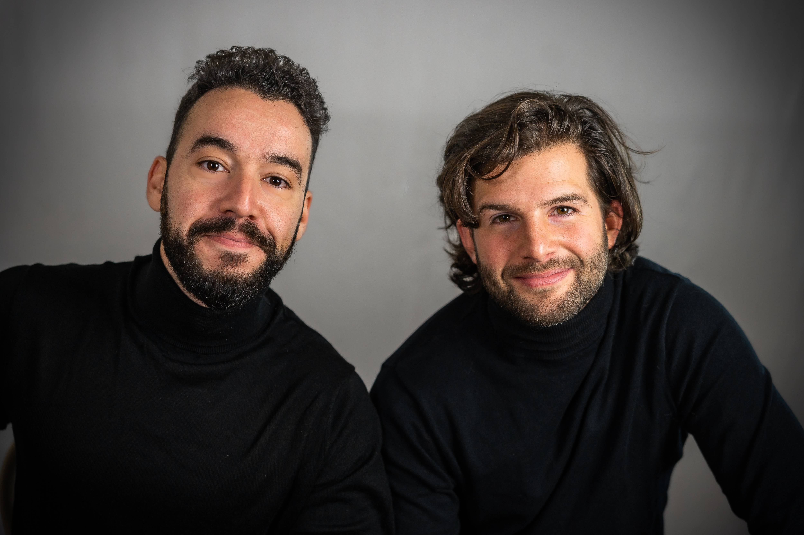

Notre histoire
HighRing ? C'est l'histoire de deux amis, Thomas & Mourad, qui cumulent plus de 11 années d'expérience dans le monde du conseil en ingénierie, et qui ont toujours partagé une même vision et des valeurs communes.
Mourad Tayebi & Thomas Langronier
Notre valeur ajoutée
Créée en 2022, HighRing se positionne comme une jeune société de conseil en recrutement de profils pluridisciplinaires cadres, avec des process innovants et rapides. Nous savons à quel point il est primordial pour nos candidats de bien choisir leur futur job et pour nos clients d’avoir une équipe performante. HighRing s’occupe de cette dualité : nous apportons un rôle de conseil auprès de nos Talents en imaginant des scénarios d'évolutions et nous accompagnons nos Partenaires sur leurs recrutements en allant bien au-delà du simple CV.